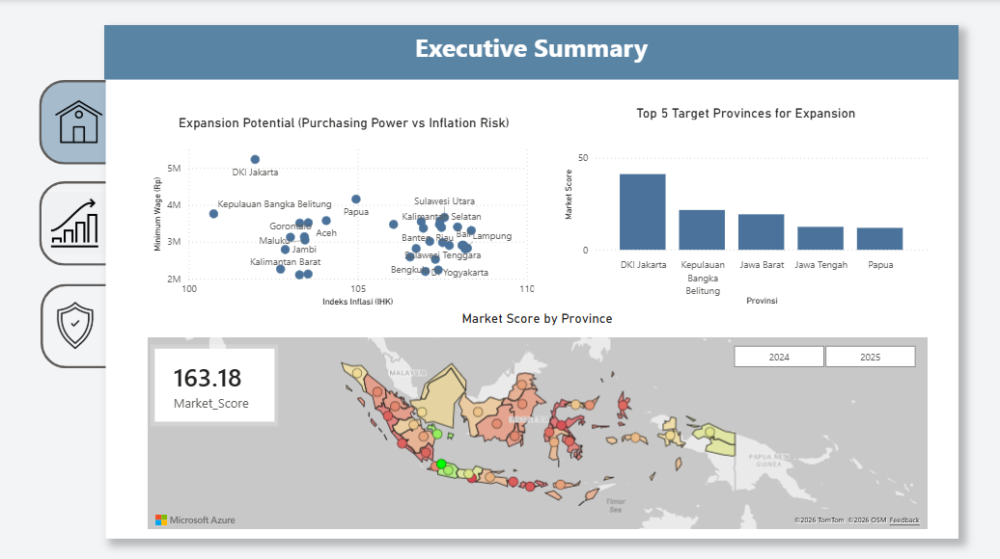
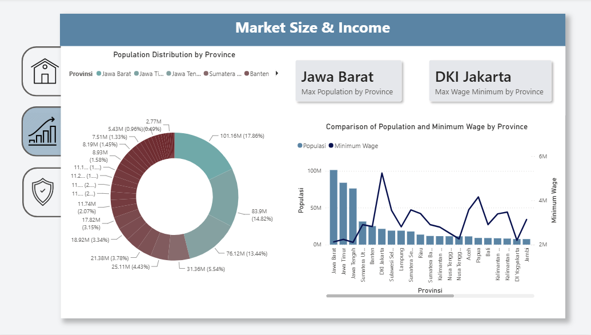
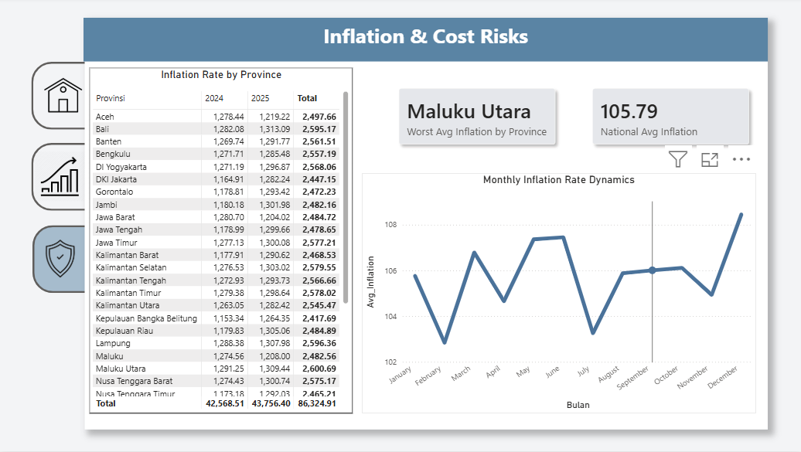

Market Expansion & Risk Assessment Dashboard
Key Tools
Project Overview
Problem
Expansion plans often follow population size blindly and overlook how much people can actually spend (purchasing power) and how fast operational costs are rising (inflation). This oversight can lead businesses to expand into “crowded but unprofitable” regions, resulting in very thin profit margins.
Objective
Provide a data-driven dashboard to identify Indonesia’s most promising provinces for expansion by balancing purchasing power (Minimum Wage) against cost risks (Inflation).
Specific questions
- Which provinces offer the “Sweet Spot” (high purchasing power & stable inflation)?
- Does a massive population guarantee a strong market value?
- What is the historical seasonality of inflation, and when is the riskiest time to launch operations?
Dashboard Documentation
Click an image to enlarge it.




Dashboard Documentation Report
Open the report in a new tabResult Summary of The Project
The Core Value Market
DKI Jakarta is the clearest sweet spot, offering the highest minimum wage (~Rp 5.2M) and stable price pressure, making it the most consistent performer in 2024 and 2025.
Volume vs. Value Paradox
Jawa Barat, Jawa Timur, and Jawa Tengah hold nearly 46% of the population but sit at the bottom tier for minimum wage (~Rp 2.1M). They have the volume, but low individual value.
The Danger Zone
Maluku Utara and Sulawesi Tengah demonstrate the highest price pressure and inflation volatility, posing a high operational cost risk.